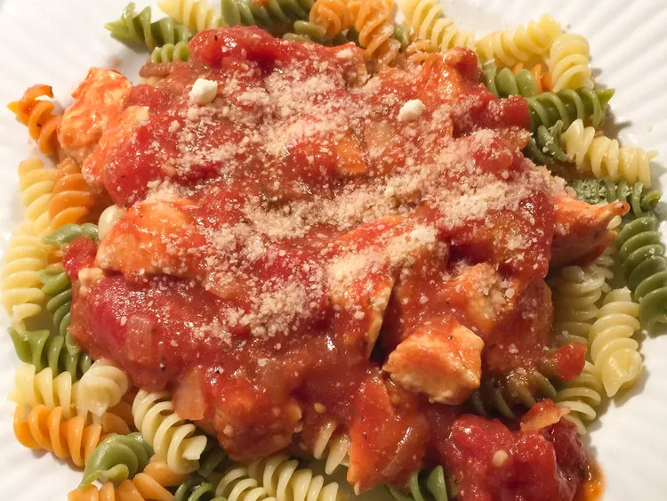

Chicken Bolognaise Recipe

How to Make Chicken Bolognaise ?
Making Chicken Bolognaise can be time-consuming, but the results are well worth the wait. You'll find a detailed ingredient list and step-by-step instructions in the recipe below, but let's go over the basics:
Ingredients
- 1 table s vegetable oil
- 3 skinless, boneless chicken breast halves - cut into 1 inch cubes
- 1 white onion, chopped
- 2 cloves garlic, finely chopped
- 1 can peeled and crushed tomatoes
- 4 button mushrooms, chopped
- 1/2 tea s Italian seasoning
- 1/2 tea s white sugar
- 4 cups uncooked rotini pasta
- 1/4 cup grated Parmesan cheese for topping
Steps
- Heat oil in a large skillet over medium heat. Sauté chicken, onion, and garlic in hot oil until chicken is mostly cooked through, about 10 minutes. Stir in crushed tomatoes, mushrooms, and Italian seasoning. Cook, stirring frequently, for about 5 minutes.
- Reduce heat, stir an sugar, and simmer for at least 15 minutes.
- Meanwhile, bring a large pot of lightly salted water to a boil; cook rotini at a boil until tender yet firm to the bite, about 8 minutes. Drain.
- Serve rotini topped with chicken mixture and grated Parmesan cheese.